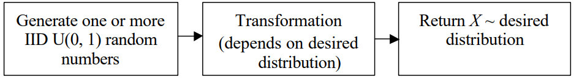

Documentation
Random variates generation is a crucial aspect of simulation and statistical modeling. The process involves generating random numbers that follow a specific probability distribution. Various algorithms exist for generating random variates from different distributions.
Formal algorithm—depends on desired distribution
But all algorithms have the same general form:
May be several algorithms for a desired input distribution form; want:
- Exact: X has exactly (not approximately) the desired distribution
- Example of approximate algorithm:
\( Treat Z = U1 + U2 + ... + U12 – 6\) as \(N(0, 1)\)
Mean, variance correct; rely on CLT for approximate normality. Range clearly incorrect.
Efficient: Low storage
- Fast (marginal, setup)
- Efficient regardless of parameter values (robust)
Simple: Understand, implement (often tradeoff against efficiency)